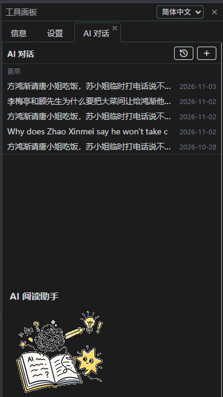

会话管理
每次围绕一本书的连续提问属于同一个会话。换话题时建议新建会话，回答会更聚焦。
新建
在对话面板里点「新建会话」，之后的问题都归到这个会话里。
历史
面板里列出这本书的历史会话，按时间排序，最近的在前。
点任意一条即可切换过去，继续之前的对话。
时间显示为「刚刚」「N 分钟前」「N 小时前」「N 天前」。

小建议
一个会话只围绕一个主题，回答会更准确。
会话按书分开，换了书也不会串。
相关页面
基于本书提问
配额与用量